DIFIX3D+
Improving 3D Reconstructions with Single-Step Diffusion Models
CVPR 2025 · NVIDIA
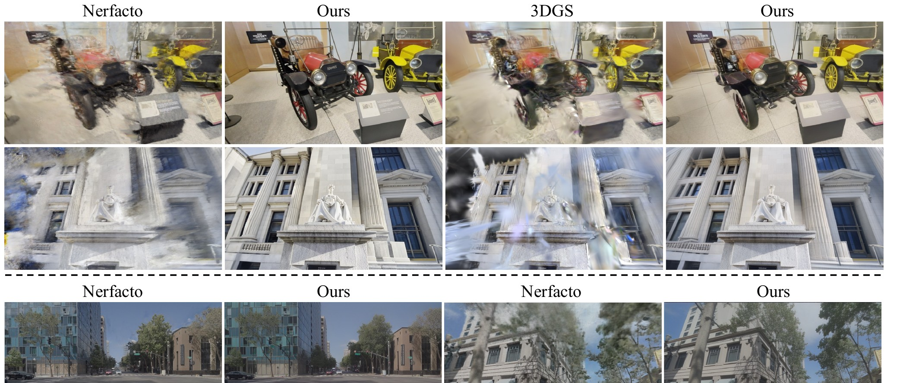
논문Figure 1. 위: in-the-wild 장면 (NeRF · 3DGS), 아래: 주행 장면. 같은 DIFIX 하나로 둘 다 보정
Background : 2D 이미지로 3D 장면을 만들고, 새 시점을 렌더링
직접 제작Alpamayo 실제 사진으로 학습 중인 2DGS (전방 카메라 label 6) — Gaussian이 쌓이며 장면이 생김
NeRF · 3D Gaussian Splatting
입력 : 여러 장의 2D 이미지 + 카메라 pose
출력 : 3D 장면 (NeRF = MLP, 3DGS = Gaussian 수백만 개)
목표 : 학습하지 않은 Novel View 렌더링
하지만 Novel View 에서는
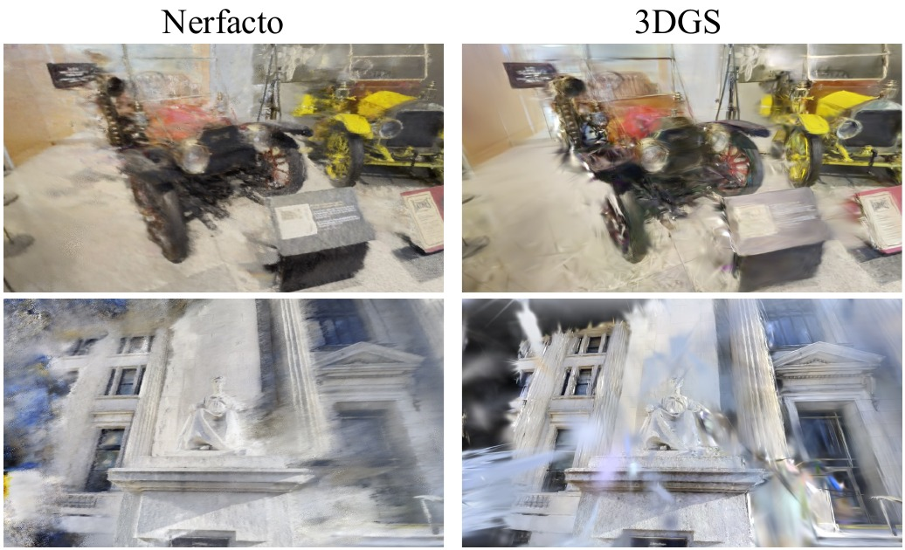
논문Figure 1 일부. 입력 카메라에서 먼 시점의 Nerfacto · 3DGS 렌더 — 차체가 번지고, 건물 앞에 없는 조각이 떠 있음
학습 카메라에서 멀어질수록 Artifact — 뭉개짐 · 형상 깨짐 · 없는 구조물
Problem Definition : Artifact 는 왜 생기는가
장면
직접 제작Alpamayo v3 2DGS (실제 사진 995장 · 15,000 iter). 학습 경로의 전방 카메라에서 시작해 왼쪽으로 0.2 m · 5° 단위로 이동한 실제 렌더
원인
1. 관측 부족 — 그 영역을 본 사진이 없거나 적음
손등만 찍어 놓고 손바닥을 묻는 것
2. Lighting condition — 사진마다 다른 조명
3. Pose · Calibration 오차
↓
입력 이미지만으로 3D를 만들면 없는 정보는 못 만듦
없는 정보는 어디서?
→ 세상의 이미지를 많이 본 모델에게서
직접 제작버튼을 누르면 학습 카메라에서 그 시점까지 카메라가 실제로 이동. 차 옆면 · 바닥처럼 학습 경로에서 안 보인 곳부터 늘어지고 깨짐
Motivation : Diffusion — 본 적 없는 곳을 그럴듯하게 생성
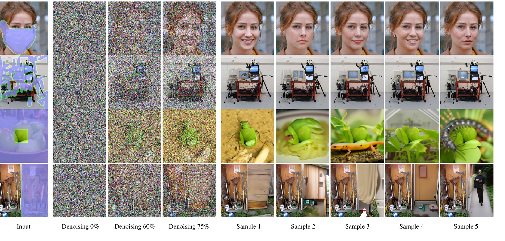
외부 논문RePaint (Lugmayr et al., CVPR 2022) Figure 1. 보라색 = 가려진 영역. 노이즈(0%)에서 시작해 단계적으로 걷어내며 채움 → 같은 입력에서 Sample 1~5 가 모두 다름
GTNerfbustersGANeRFNeRFLiXNerfactoOurs
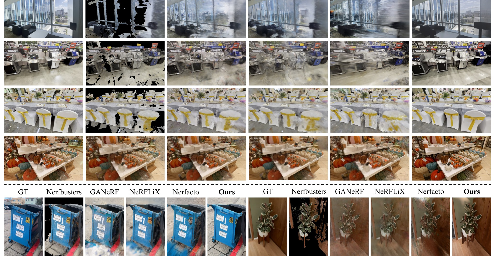
논문Figure 5. DL3DV(위 4행) · Nerfbusters(아래) 의 학습 카메라에서 먼 시점. 기존 방법은 구멍 · 번짐, Ours 만 채워짐
Diffusion 이 하는 일
1
노이즈 → 이미지
노이즈를 조금씩 걷어내며 생성 (multi-step)
2
대규모 real-world 데이터의 prior
가려진 · 본 적 없는 영역도 주변과 맞게 채움
3
생성 모델이라 매번 다름
같은 입력 → 다른 결과
Pitching point
3D 의 novel view 미관측 영역 = inpainting 문제
→ diffusion prior 로 빈 곳을 채우자
단, 그대로 쓰면
매번 다름 → ① 일관성 문제
multi-step → ② 속도 문제
Diffusion 을 그대로 쓰면 : ① 일관성 ② 속도
① 일관성 (Consistency)
시점마다 다른 구조를 생성 — 정면의 나무 ≠ 측면의 나무
→ 3D Gaussian 이 하나의 장면으로 수렴 못 함
② 속도
multi-step denoising — 무거움
→ 3D 학습 중 반복 호출 · 렌더링마다 사용 불가
DIFIX
렌더 2D 이미지 보정 (모델)
① reference view ② single step
➜
DIFIX3D
보정 이미지로 3D 재학습 (방법론)
① 3D로 증류 → 일관성
➜
DIFIX3D+
최종 렌더에 후처리
② 실시간에 가까운 속도
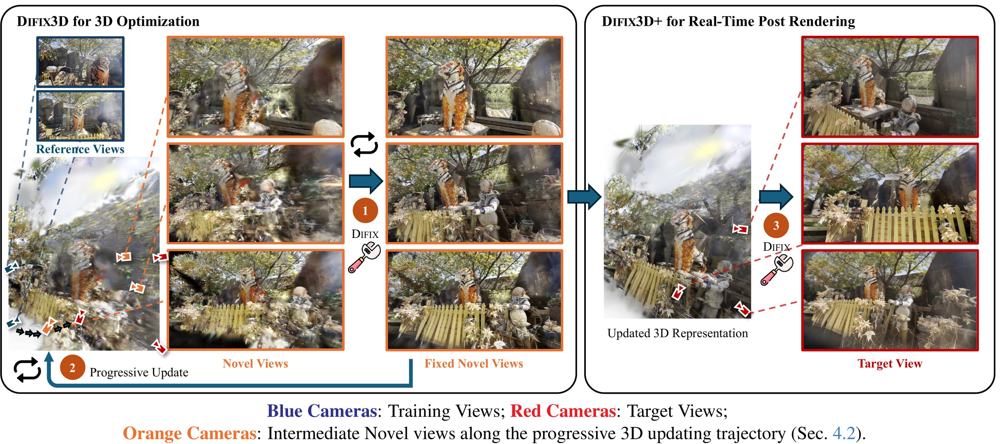
논문Figure 2. 왼쪽 DIFIX3D (학습 중 보정 → 3D 증류), 오른쪽 DIFIX3D+ (렌더 후처리)
DIFIX : SD-Turbo 기반 Single-Step 이미지 보정 모델
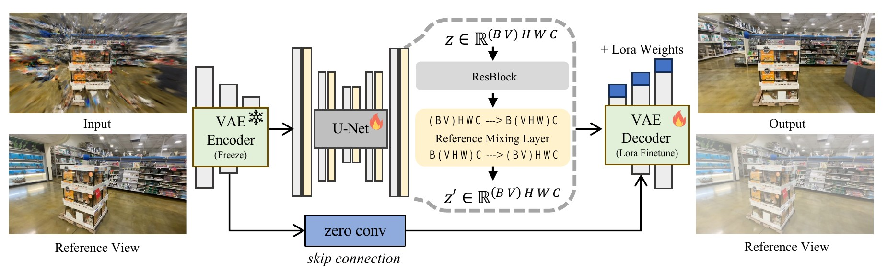
논문Figure 3. VAE Encoder(고정) → U-Net(학습) → VAE Decoder(LoRA 학습), skip connection
SD-Turbo 를 fine-tuning — diffusion prior를 처음부터 학습하지 않음
SD-Turbo = few-step 으로 distill 된 모델 → 그래서 1 step 이 가능
깨진 렌더를 노이즈 낀 이미지로 보고 τ = 199 에서 한 번에 복원 → ② 속도
1 step
multi-step diffusion 대비 10배 이상 빠름 (논문)
1.3 B
nvidia/difix_ref 파라미터 · 5.2 GB (fp16 약 2.6 GB)
76 ms
NVIDIA A100, 렌더 한 장당 추가 시간 (논문)
Reference View : 가장 가까운 실제 사진으로 일관성 잡기
직접 제작Alpamayo top view. 회색 = 학습 카메라, 파랑 = novel view (pseudo view), 검정 = 그 시점의 reference (가장 가까운 실제 카메라)
Reference mixing layer — U-Net self-attention 변형
view 축을 공간 축과 합침 : (B·V)·HW·C → B·(V·HW)·C
→ 두 view 의 token 을 한 번에 attention
1. 2D 구조 그대로 → pretrained weight 재사용
2. reference 특징 참고 → ① 일관성

입력 1 : novel view 렌더

입력 2 : reference (실제 사진)
↓DIFIX↓

출력 : 보정된 novel view
직접 제작실제 학습 중 만든 pseudo view 25장 (label 44 · 52 · 60 · 68 · 76 × 5방향)
논문Table 5 — Nerfbusters 테스트 장면의 novel view 를 DIFIX 로 보정해 정답 사진과 비교 (평균). Gram · Ref 열 = 학습 설정(✓ = 사용), LPIPS · FID 열 = 평가 지표
학습 데이터 : 깨진 렌더 ↔ GT 쌍을 직접 만들기
novel view 에는 GT 가 없음 → GT 가 있는 시점에서 깨진 렌더를 만들어 쌍으로 씀
직접 제작Alpamayo 실제 사진 + 실제 2DGS 학습 결과 (label 40~79). 트랙바 = 시점 이동
시점
학습 진행 (front 60)
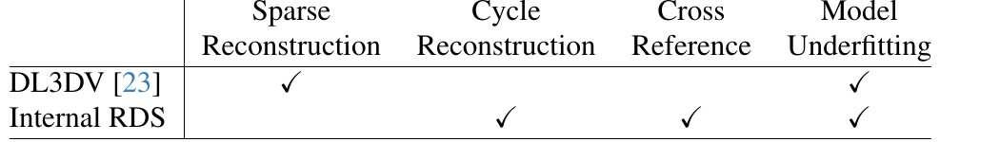
논문Table 1. 주행 데이터(Internal RDS)는 cycle · cross · underfitting 세 가지 모두, DL3DV 는 sparse reconstruction + underfitting
Corrupted ViewClean View

Loss 와 τ : 무엇을 맞추고, 얼마나 새로 그릴까
직접 제작학습 흐름 (논문 Figure 3 위에 표시). 블록이나 이미지를 클릭하면 가운데로 확대 — Esc 또는 다시 클릭하면 닫힘
Loss
Reconstruction loss — GT 와 픽셀 차이 (L2)
LPIPS — VGG16 feature 로 지각 유사도
Gram — VGG16 feature 상관관계
→ 텍스처 · 스타일 비교
+Gram, +Reference 로 FID 61.8 → 55.5 → 47.9 (논문 Table 5)
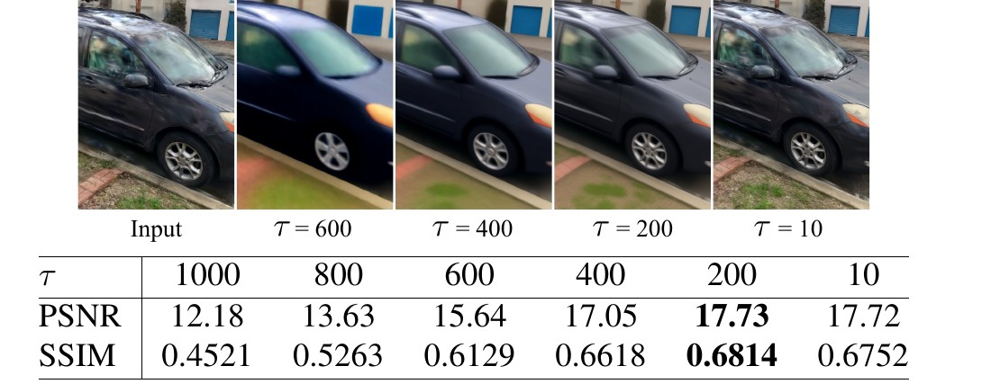
논문Figure 4. τ 가 크면 차 형태가 바뀌고, 작으면 artifact 가 남음. PSNR 최고 τ = 200
τ = SD-Turbo 노이즈 레벨 (diffusion timestep)
크면 → 구조를 무시하고 새로 그림 → 일관성 깨짐
작으면 → artifact 그대로
논문 최적 τ = 200
정성적으로는 τ = 20 이 더 좋아 보임 → PSNR vs 정성 평가 엇갈림
DIFIX3D : Diffusion Distillation — 보정 이미지를 3D 로 증류
직접 제작Alpamayo 실제 결과: novel view 깨짐 → DIFIX 1 step → pseudo training view → 3DGS 재학습. 영상 위를 드래그하거나 단계 버튼으로 이동
1
novel view 렌더 + reference → DIFIX
single step · 짧음
2
보정 이미지 = pseudo training view
그 카메라 위치의 "가상의 정답"으로 추가
3
3DGS 재학습
실제 사진 + pseudo view 같이 · 긺
2D diffusion 지식을 3D representation 안으로
→ 보정이 하나의 3D 로 합쳐짐
→ 시점마다 따로 놀지 않음 ① 일관성
Progressive Update : 가까운 시점부터 조금씩, 주기적으로 DIFIX
논문Figure 8. 열 = Table 4 의 행 (누적). 열 이름 아래 한글 = 각 행의 의미
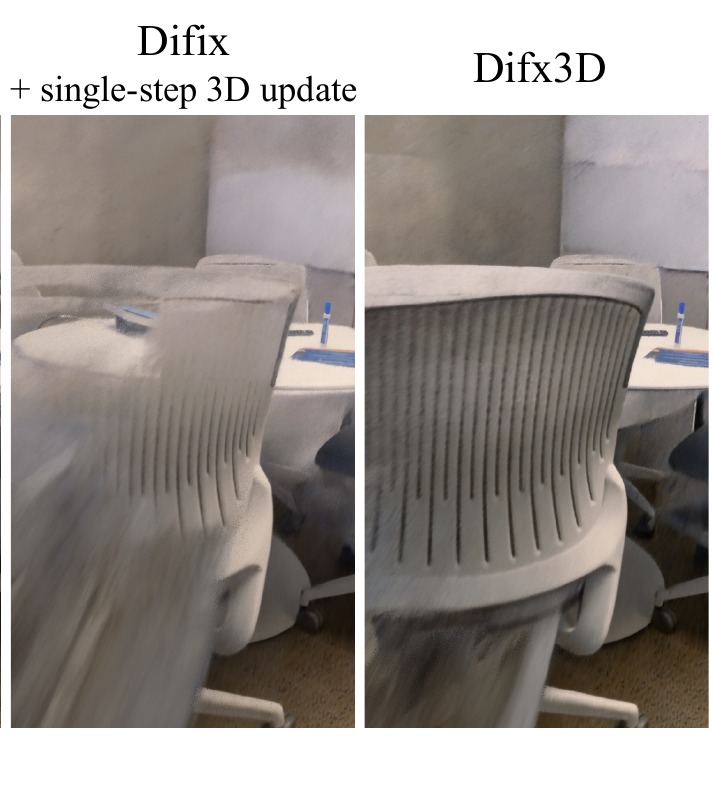
(b) 한 번에
(c) 점진적
| Table 4 | LPIPS ↓ | FID ↓ |
|---|
| Nerfacto | 0.4021 | 134.65 |
| (a) + Difix (2D만) | 0.2996 | 49.87 |
| (b) + 한 번에 3D 업데이트 | 0.3424 | 75.94 |
| (c) + 점진적 (Difix3D) | 0.3277 | 63.77 |
| (d) + 후처리 (Difix3D+) | 0.2789 | 49.44 |
논문Table 4 · Figure 8 확대. (b) 는 등받이 살이 번지고 (c) 는 또렷함. (a) 2D 만 고치면 수치는 좋아도 덜 관측된 곳에서 약하고 프레임 사이 깜빡임(flickering)이 생김 (Sec. 5.3)
학습 view → target view 로 카메라를 조금씩 이동
먼 시점부터 고치면 참고 정보 부족 → hallucination
매 iter 호출 → 느림 / 간격이 길면 → hallucination 누적
원본 시점은 조금 손해, novel view 는 robust
Table 4 의 a · b · c · d (누적: 위 행에 하나씩 더함)
(a) Nerfacto 렌더에 DIFIX 만 적용 — 3D 는 그대로, 보정 이미지를 평가
(b) DIFIX 출력을 pseudo view 로 3D 에 증류, 목표 시점을 한 번에 추가
(c) 1.5k iter 마다 카메라를 목표 쪽으로 조금씩 옮기며 반복 = DIFIX3D
(d) (c) 모델의 최종 렌더에 DIFIX 한 번 더 = DIFIX3D+
(a) 는 2D 보정 이미지를, (b) · (c) 는 3D 모델 렌더를 평가 → 수치만 보면 (a) 가 좋아 보임
DIFIX3D+ : 렌더링 시점의 실시간 후처리
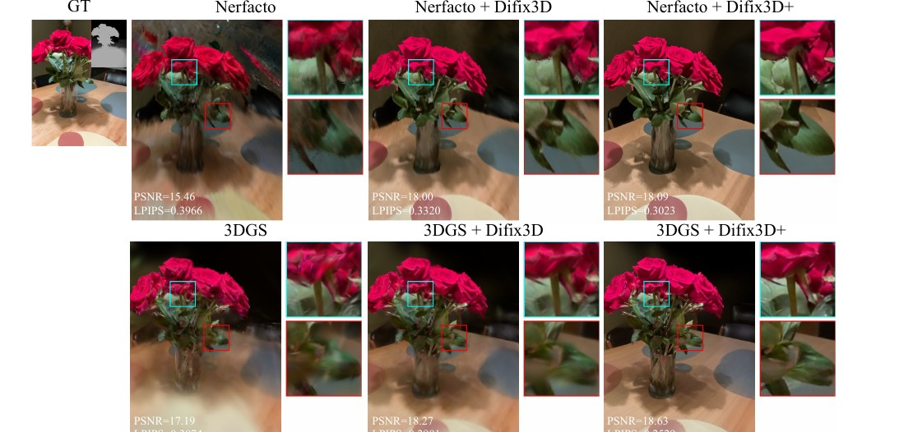
논문Figure 7. 3DGS → + DIFIX3D → + DIFIX3D+. PSNR 17.19 → 18.27 → 18.63
렌더 한 장당 DIFIX 추가 시간 (ms)
Alpamayo 왼쪽 차로 주행 (학습 경로 밖) — 225 프레임
DIFIX3D (재학습한 3D 렌더)
+ DIFIX3D+ (렌더 후처리)
영상 위를 좌우로 드래그하면 경계 이동
3D 표현력 한계로 남은 artifact → 렌더 후 한 번 더
single step 이라 가능 → ② 속도, 4090 에서는 실시간 아님
직접 제작주차 차 · 벽의 번짐이 선명해짐. 단 끝 구간(약 프레임 210~)에서는 벽 자리에 없던 흰 차를 그려 넣음 — 프레임마다 독립 보정이라 앞뒤 일관성 보장 없음
Results : FID 2배 이상 개선, NeRF · 3DGS 모두 적용
DL3DV (논문 Table 2)
| Method | PSNR ↑ | LPIPS ↓ | FID ↓ |
|---|
| 3DGS | 17.18 | 0.3835 | 107.23 |
| + DIFIX3D | 17.80 | 0.3142 | 50.45 |
| + DIFIX3D+ | 17.99 | 0.2932 | 40.86 |
| Nerfacto | 17.16 | 0.4303 | 112.30 |
| + DIFIX3D | 17.80 | 0.3271 | 50.79 |
| + DIFIX3D+ | 17.82 | 0.2828 | 41.77 |
같은 DIFIX 하나로 NeRF · 3DGS 모두 적용
FID 107.2 → 40.9 (DL3DV, 3DGS) — 약 2.6배
Nerfbusters 3DGS FID 113.8 → 41.8
주행 데이터 (RDS, Nerfacto) — 논문 Figure 6
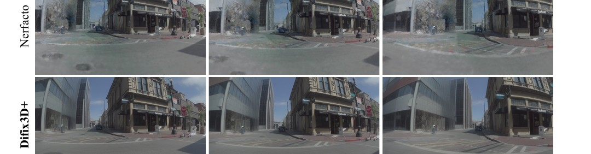
논문Figure 6. 위: Nerfacto, 아래: DIFIX3D+. 학습에 안 쓴 카메라 시점 (40° 간격 3대 중 중앙만 학습)
| RDS | PSNR ↑ | LPIPS ↓ | FID ↓ |
|---|
| Nerfacto | 19.95 | 0.5300 | 91.38 |
| + DIFIX3D | 21.52 | 0.4266 | 77.83 |
| + DIFIX3D+ | 21.75 | 0.4016 | 73.08 |
논문Table 3. 주행 데이터 20 씬, 학습에 안 쓴 좌우 카메라로 평가
주행 데이터도 PSNR 19.95 → 21.75, FID 91.4 → 73.1
주행 데이터 결과 : 논문 · 직접 제작
논문 — RDS 주행 데이터, 학습에 안 쓴 카메라


Nerfacto
+ DIFIX3D+
왼쪽 건물 벽 · 노면의 번짐과 색 얼룩이 사라짐
PSNR 19.95 → 21.75, FID 91.4 → 73.1 (Table 3)
논문Figure 6 (원본 이미지 960×536). 40° 간격 카메라 3대 중 가운데만 학습, 좌우 카메라 시점에서 비교. 영상 위를 좌우로 드래그
직접 제작 — 추종 카메라, 좌우 이동


DIFIX3D 전
DIFIX3D 후 (재학습)
흰 트럭 · 노면 · 주차 차의 깨짐이 줄어듦
트럭 앞 · 오른쪽 나무처럼 관측이 적은 곳은 덜 고쳐짐
직접 제작자차 뒤 추종 카메라를 왼쪽 → 오른쪽으로 최대 3 m 이동 (물체와 1 m 이상 떨어진 곳까지만). 실제 사진 15,000 iter + DIFIX 27,000 iter
Limitation & 의견
① 같은 덩어리를 프레임마다 다른 차로 — DIFIX3D+ (Alpamayo 왼쪽 차로)
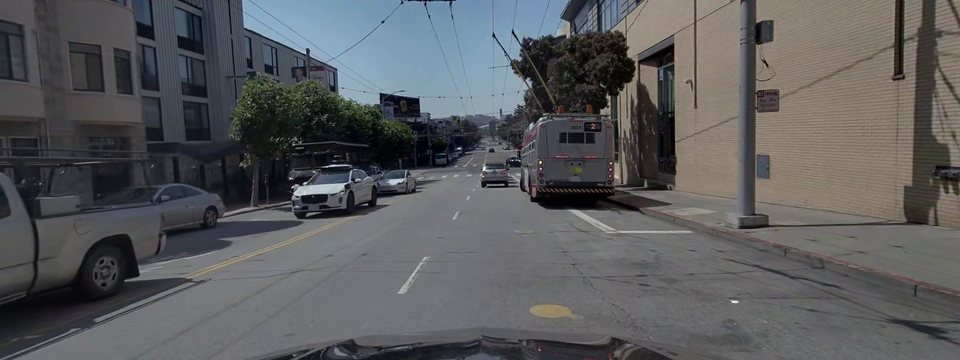
직접 제작왼쪽: 가장 가까운 실제 사진 (front 150) — 실제로는 흰 픽업이 주차돼 있었음. 맞춘 프레임은 하나뿐 → 프레임마다 독립 보정이라 앞뒤 일관성 보장 없음
② Difix 가 그린 것이 3D 에 굳음 — progressive 학습 (Alpamayo 오른쪽 카메라)
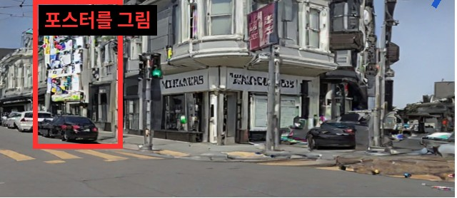
1단계 Difix 출력
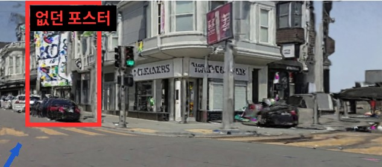
4단계 3D 모델 렌더
직접 제작흰 벽에 없던 컬러 포스터 → pseudo training view 로 들어가 2단계부터 3D 에 남음
논문 Sec. C (limitation 그림은 없음)
"limited by the quality of the initial 3D reconstruction ... struggles to enhance views where 3D reconstruction has entirely failed."
속도 "실시간에 가깝다" vs 4090 260 ms
평가 τ 처럼 정량 vs 정성 엇갈림
future work : single-step video diffusion